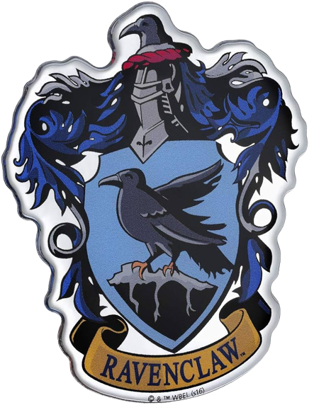

História
Corvinal é uma das quatro casas da Escola de Magia e Bruxaria de Hogwarts, fundada por Helga Hufflepuff. A casa valoriza a inteligência, criatividade, aprendizado e coragem. A entrada para a Sala Comunal de Corvinal está localizada atrás de uma estátua de Rowena Ravenclaw, a fundadora da casa.
Características e Princípios
Inteligência
A principal característica valorizada em Corvinal é a inteligência. Os membros da casa são conhecidos por sua curiosidade intelectual e sede de conhecimento.
Criatividade
Além da inteligência, a criatividade e originalidade são incentivadas em Corvinal. Os corvinos muitas vezes se destacam em áreas artísticas e inovadoras.
Aprendizado
A busca pelo aprendizado é uma prioridade para os membros de Corvinal. Eles valorizam a educação e a exploração do desconhecido.
Coragem
Embora a coragem seja uma característica tradicionalmente associada à Grifinória, Corvinal também valoriza a bravura, especialmente quando está ligada à busca pelo conhecimento e pela verdade.